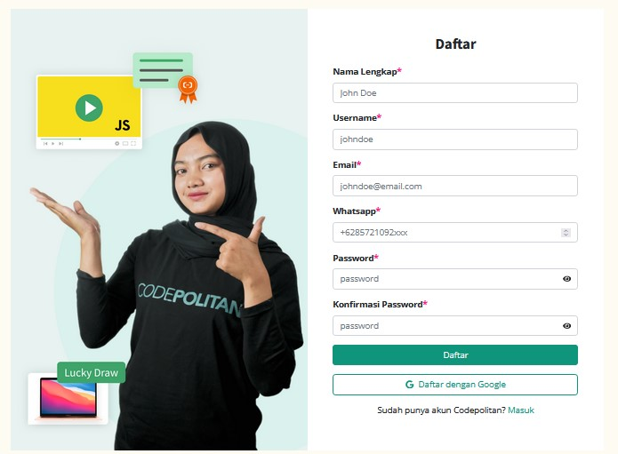
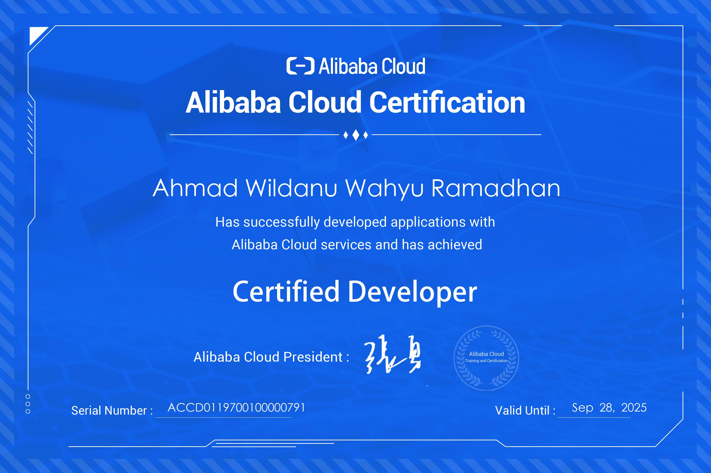

The rapid growth of cloud computing technology has transformed the IT industry worldwide. Alibaba Cloud, as one of the leading cloud service providers globally, has played a pivotal role in facilitating this change. DevHandal, in collaboration with Alibaba Cloud, has been a bridge for IT professionals to understand and master cloud technology. This article will outline my personal experience in participating in the DevHandal program and successfully obtaining the Certified Developer certification from Alibaba Cloud.
DevHandal is an online learning platform that focuses on cloud technology, offering various training programs designed to help professionals develop their skills. DevHandal offers a range of training programs covering topics such as cloud computing, security, and infrastructure management.
On the other hand, Alibaba Cloud is a cloud service provider headquartered in China that has rapidly expanded its presence worldwide. They offer a wide range of services, including cloud computing, databases, analytics, artificial intelligence, and more. Alibaba Cloud has a strong reputation in the cloud computing industry, and their certifications are recognized globally.

You can register on this link : Beasiswa Devhandal
When I first decided to deepen my knowledge of cloud computing, I began searching for training programs that could help me achieve that goal. That's when I discovered DevHandal. I was impressed with the various programs they offered, including those related to Alibaba Cloud.
I decided to enroll in the "Certified Developer" program offered by DevHandal. This program is specifically designed to help participants understand Alibaba Cloud's services and technologies, as well as prepare them for the certification exam.
One of the aspects I appreciated most about DevHandal was my ability to practice what I learned directly in the Alibaba Cloud environment. DevHandal provided access to cloud accounts that participants could use to implement small projects and test the concepts taught in the program.
The program was structured in a way that allowed participants to progress at their own pace. Each module covered specific topics related to Alibaba Cloud services, and the materials were delivered through video tutorials, case studies, and hands-on exercises in the cloud environment. This approach made it easy to grasp complex concepts and gain practical experience.
During the course, I learned about various Alibaba Cloud services, including Elastic Compute Service (ECS), Relational Database Service (RDS), Object Storage Service (OSS), and more. I also delved into concepts such as load balancing, auto scaling, and data security in the cloud.
One of the highlights of the program was the support from experienced instructors and the DevHandal community. Whenever I had questions or faced challenges, I could turn to the community for guidance. This collaborative learning environment was invaluable in my journey to becoming a certified Alibaba Cloud developer.

After completing the training program, I felt confident in my understanding of Alibaba Cloud services and decided to take the Alibaba Cloud Certified Developer exam. This certification is highly regarded in the industry and demonstrates a deep understanding of Alibaba Cloud's offerings.
The certification exam covered a wide range of topics, including:
The exam consisted of both multiple-choice questions and hands-on tasks that required me to perform various cloud-related activities. It was a comprehensive test of my knowledge and skills acquired through the DevHandal program.
I dedicated several weeks to intensive preparation, reviewing course materials, practicing in the Alibaba Cloud environment, and taking practice exams. Finally, the day of the certification exam arrived, and I felt well-prepared to tackle the challenges it presented.
Achieving Alibaba Cloud Certified Developer certification has had several significant benefits for my career and professional development:
Overall, earning the Alibaba Cloud Certified Developer certification has been a rewarding experience that has accelerated my career and expanded my horizons in the field of cloud computing.
As I continued my journey to become a proficient cloud developer, I came across CodePolitan, a platform that offers a wide range of tech-related content, including articles, tutorials, and courses. CodePolitan became an integral part of my learning process, complementing the knowledge I gained from DevHandal and Alibaba Cloud.
CodePolitan's articles and tutorials covered various aspects of cloud computing, programming languages, and best practices in the IT industry. It was a valuable resource for staying updated with the latest trends and technologies.
Additionally, CodePolitan offered courses on topics like web development, data science, and cloud architecture, which allowed me to further expand my skill set. The interactive nature of these courses and the opportunity to work on real-world projects enriched my learning experience.
One of the standout features of CodePolitan was its vibrant community. I could engage with fellow learners, ask questions, and share my knowledge and experiences. This sense of community provided additional support and motivation throughout my learning journey.
My journey with DevHandal, Alibaba Cloud, and CodePolitan has been a transformative experience in my career. DevHandal provided me with the knowledge and practical skills needed to excel in the world of cloud computing, Alibaba Cloud certification validated my expertise, and CodePolitan enriched my understanding of tech-related topics.
If you're considering a career in cloud computing or looking to enhance your cloud skills, I highly recommend exploring the programs offered by DevHandal, considering Alibaba Cloud certification, and leveraging resources like CodePolitan. It's a journey worth taking, and the benefits are substantial.
For more information about DevHandal programs, Alibaba Cloud services, and CodePolitan, you can visit their official websites:
Feel free to reach out to me if you have any questions or would like to discuss my experience with DevHandal, Alibaba Cloud, or CodePolitan further.